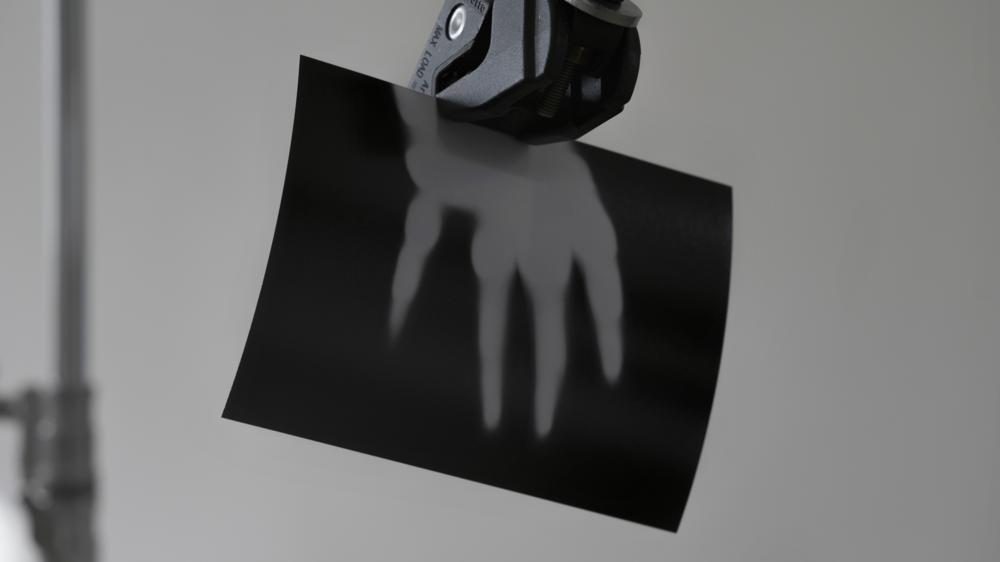
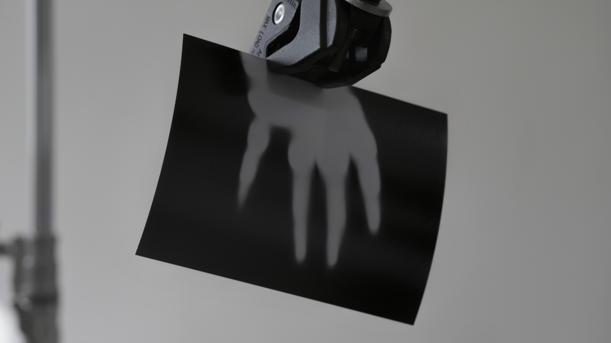

DEVOTION
//:Mixed Media Installation
3D Rendered Media, C-Stands, Photo Print, Projection, Spot Light
"Devotion is a multi media installation that explores the idea of representation in today’s augmented technologies over the idea of the cave: first as a prehistoric cave where the first human imprints take place, second as a space for Plato’s allegory and third as an imaginary space that 3D technologies and image extraction to present a trans humanistic place that trajects future ambitions of today’s technologies over inter planetary objectives. Based on game engine renders to photograms, devotion is a post cinematic cave that takes place on an imaginary Mars"


 
